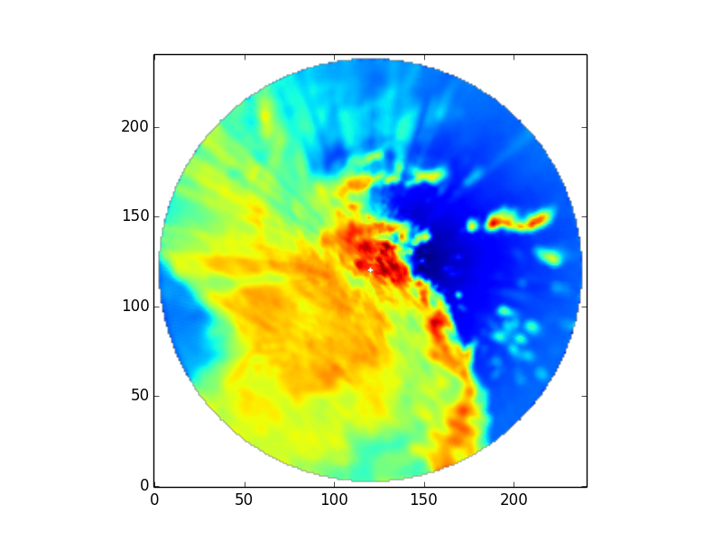

Map the reflectivity field of a single radar from Antenna coordinates to a Cartesian grid.
Python source code: plot_map_one_radar_to_grid.py
print __doc__
# Author: Jonathan J. Helmus (jhelmus@anl.gov)
# License: BSD 3 clause
import numpy as np
import matplotlib.pyplot as plt
import pyart
# read in the data
RADAR_FILE = '110635.mdv'
radar = pyart.io.read_mdv(RADAR_FILE)
# mask out last 10 gates of each ray, this removed the "ring" around th radar.
radar.fields['reflectivity_horizontal']['data'][:, -10:] = np.ma.masked
# perform Cartesian mapping, limit to the reflectivity field.
grid = pyart.map.grid_from_radars(
(radar,),
grid_shape=(241, 241, 2),
grid_limits=((-123000.0, 123000.0), (-123000.0, 123000.0),
(1500, 2000)),
fields=['reflectivity_horizontal'])
# create the plot
fig = plt.figure()
ax = fig.add_subplot(111)
ax.imshow(grid.fields['reflectivity_horizontal']['data'][1], origin='lower')
plt.show()
Total running time of the example: 32.22 seconds